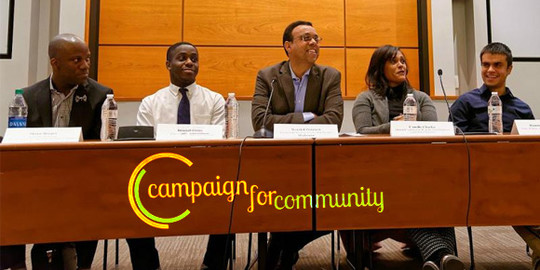
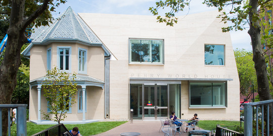
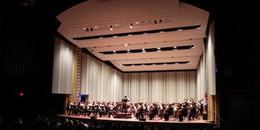

News

University of Pennsylvania Trustees Extend President Amy Gutmann’s
Contract to 2022
Ten Penn Professors Named AAAS
Fellows for 2016
A Message to the Penn
Community Concerning Our
DACA and Undocumented
Community Members
More News For Media
Penn Initiatives



Events

Penn Symphony Orchestra and Penn Chamber Orchestra
Irvine Auditorium
Women’s Basketball vs
La Salle The Palestra
The Palestra
The Rodney Marsalis
Philadelphia Big Brass
Harold Prince Theatre
More News >>
@uofpenn
@uofpenn